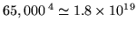
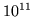
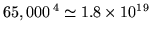
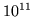

Estimates of probabilities in  -gram models are commonly based on maximum
likelihood estimates - that is, by counting events in context on some given
training text:
-gram models are commonly based on maximum
likelihood estimates - that is, by counting events in context on some given
training text:
The choice of  has a significant effect on the number of potential
parameters that the model can have, which is maximally bounded by
has a significant effect on the number of potential
parameters that the model can have, which is maximally bounded by
 , where
is the set of words in the
language model, also known as the vocabulary. A 4-gram model
with a typically-sized 65,000 word vocabulary can therefore
potentially have
 parameters. In practice, however, only a
small subset of the possible parameter combinations represent likely
word sequences, so the storage requirement is far less than this
theoretical maximum - of the order of  times less in
fact.14.3 Even given this significant reduction in
coverage and a very large training text14.4 there are still many plausible word
sequences which will not be encountered in the training text, or will
not be found a statistically significant number of times. It would not
be sensible to assign all unseen sequences zero probability, so
methods of coping with low and zero occurrence word tuples have been
developed. This is discussed later in section 14.3.
, where
is the set of words in the
language model, also known as the vocabulary. A 4-gram model
with a typically-sized 65,000 word vocabulary can therefore
potentially have
 parameters. In practice, however, only a
small subset of the possible parameter combinations represent likely
word sequences, so the storage requirement is far less than this
theoretical maximum - of the order of  times less in
fact.14.3 Even given this significant reduction in
coverage and a very large training text14.4 there are still many plausible word
sequences which will not be encountered in the training text, or will
not be found a statistically significant number of times. It would not
be sensible to assign all unseen sequences zero probability, so
methods of coping with low and zero occurrence word tuples have been
developed. This is discussed later in section 14.3.
It is not only the storage space that must be considered, however - it is also necessary to be able to attach a reasonable degree of confidence to the derived estimates. Suitably large quantities of example training text are also therefore required to ensure statistical significance. Increasing the amount of training text not only gives greater confidence in model estimates, however, but also demands more storage space and longer analysis periods when estimating model parameters, which may place feasibility limits on how much data can be used in constructing the final model or how thoroughly it can be analysed. At the other end of the scale for restricted domain models there may be only a limited quantity of suitable in-domain text available, so local estimates may need smoothing with global priors. In addition, if language models are to be used for speech recognition then it is good to train them on precise acoustic transcriptions where possible - that is, text which features the hesitations, repetitions, word fragments, mistakes and all the other sources of deviation from purely grammatical language that characterise everyday speech. However, such acoustically accurate transcriptions are in limited supply since they must be specifically prepared; real-world transcripts as available for various other purposes almost ubiquitously correct any disfluencies or mistakes made by speakers.